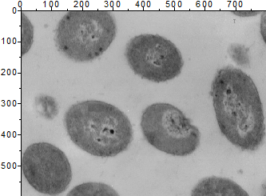
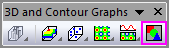

Bilddiagramm
Image-Plot
- 
Datenanforderungen
- Matrix: Eine Matrix von Z-Werten Die Daten stammen womöglich aus einem Rasterbild. Ein Blatt mit mehreren Objekten wird unterstützt.
oder
- Bild: Ein Bildfenster. Ein Bild mit mehreren Frames wird unterstützt. Lesen Sie auf dieser Seite unten, wie Sie durch alle Frames gehen.
Diagramm erstellen
Aktivieren Sie eine Matrix oder ein Bildfenster.
Wählen Sie im Menü .
oder
Klicken Sie auf die Schaltfläche Bilddiagramm auf der Symbolleiste 3D- und Konturdiagramme.
- 
Vorlage
IMAGE.OTP (im Origin-Programmordner installiert).
Notizen
- Der X- und Y-Standardachsenbereich ist durch den Koordinatenbereich der Matrix festgelegt, der in einem Bild der gleiche Bereich wie der X- und Y-Pixelbereich ist. Das Menü wird die X- und Y-Werte der Matrix anzeigen.
- In Bilddiagrammen von Matrixdaten (z. B. einem Bilddiagramm von geografischen Daten) ist die Layergröße eine Funktion des Verhältnisses zwischen Xmax - Xmin und Ymax - Ymin, und die Option Achsenlänge mit Skalierung mit Verhältnis X:Y verknüpfen des Layers ist standardmäßig auf 1 gesetzt.